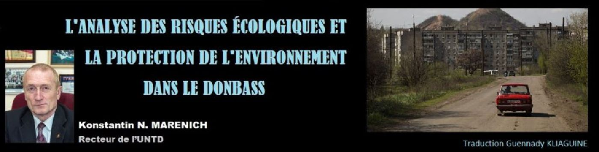

L’analyse des risques écologiques et la protection de l’environnement dans le Donbass
par Konstantin N. MARENICH (traduction : Guennady KLIAGUINE)

La concentration des ressources naturelles importantes dans les gisements de minerais, les bonnes conditions climatiques, l’existence de grandes zones propices à la production agricole (la terre-noire, les ressources en eau), l'accès à la mer d'Azov a provoqué un développement industriel sans précédent du Donbass et la forte concentration de la population.
Présentement le sujet de Donbass figure toujours dans les actualités. C’est le conflit politique et militaire dans le Sud-Est de l'Ukraine qui est devenu une unité d'information de base.
Cependant, même si le plan de réanimation de l'idéologie nazie n’aurait pas été réalisé pour l'Ukraine, les apologistes de la mondialisation de l'économie mondiale aurait trouvé un prétexte pour un conflit, en poursuivant comme l’objectif principal la désintégration de la Russie en tant que l'État intégral avec un objectif concomitant une désindustrialisation du Donbass et le nettoyage de sa population autochtone (russe dans son esprit). Cette conclusion n'est pas dénuée de fondements, parmi lesquels :
la détérioration du climat de la Terre apporte un élément important au risque accru d'une existence confortable de soi-disant « milliards d'or ». Par conséquent, on fait la recherche de zones de confort et des moyens pour éliminer la population autochtone. En ce qui concerne le Donbass (la région avec un climat favorable et les bons conditions naturelles), son peuple a été qualifié comme celui de sous-humanités (ce sont des déclarations au niveau officiel des responsables ukrainiens qui sont venus au pouvoir à la suite d’un coup d'État en 2014) ;
le début et le déroulement ultérieur des actions de guerre par les forces armées et les bataillons nationaux de l'Ukraine contre les habitants de la République Populaire de Donetsk et de Lougansk avaient pour but de créer des conditions de vie insupportables qui forcent des gens à quitter leurs foyers ;
les réserves potentiels récupérables de gaz de schiste dans le Sud-Est de l'Ukraine sont une incitation importante pour les groupes multinationaux et des oligarques locaux par rapport à une réorientation fondamentale de l'ensemble des d’infrastructures et d’économie des régions.
La formation lui-même des Républiques populaires de Donetsk et de Lougansk, la mise en place confiant et la dynamique de leur statut d'État sont devenus une preuve convaincante de l'insolvabilité des initiatives des apologistes de mondialisation pour reformater la structure socio-économique de la région de Donetsk. Et maintenant, nous observons une autre leur initiative. On a mis une prévention de la prochaine catastrophe écologique « imminente » dans le Donbass qui s’approche. Avec une régularité notable sur les sites ukrainiens et d’autres, on fait apparaître des articles problématiques, orientant des lecteurs à se préparer à la « retraite correcte du Donbass », inévitable en raison de l'inadaptation du territoire pour la vie à venir (depuis des décennies). De plus, on convainc la publique russe et les structures de pouvoir de la Russie de l’inutilité du Donbass et donc de l’inopportunité de soutenir les Républiques populaires de Donetsk et de Lougansk. La prétention à la crédibilité des auteurs de ces publications est une présentation de la matière qui analyse des faits réels d’une manière pseudo-scientifique biaisée. Cependant, lors de l'analyse, l'auteur introduit des renseignements faux ou inexacts afin de guider l'opinion publique dans une direction souhaitée.
Comme un exemple typique, on peut présenter l'article « Savants : Catastrophe écologique menace le Donbass » (Kramatorsk Post, «Донбассу грозит экологическая катастрофа, – учёные1»).
Dans cet article sont présentées les perspectives de la catastrophe environnementale à venir causée par la montée généralisée de l'eau des mines à la suite de la fermeture d’une mine « non contrôlée » et provoquée par des changements de structure géologique consécutifs à l'exploitation minière souterraine. Dans ces perspectives, on considère la disparition complète des sources d'eau potable, la déformation du sol, les accidents de l’écorce, les entonnoirs de roche, dans lesquels les bâtiments et d’autres structures s’effondrent. Comme preuve, l’effondrement d'une résidence de cinq étages a été présenté.
En tant que témoin des événements qui se sont déroulés en juin 1980 dans la rue Rosa Luxemburg à Donetsk (dans la nuit du samedi au dimanche), je dois déclarer sur une jonglerie typique des faits, parce que la « résidence de cinq étages » n’a pas du tout effondré. En fait, il y a eu l’abattage de la dernière entrée de cette résidence en briques en raison de non-concordance de la technologie de construction de son cycle zéro avec des conditions géologiques réelles. Il n’avait pas été tenu compte de la proximité de la surface de la nappe phréatique, qui engendra des caves inondées et, plus tard, des fondations érodées. Tous les autres bâtiments érigés à proximité (des résidences à plusieurs étages, des bureaux, des foyers de l'Université nationale de Donetsk) n'ont pas subi de destruction, et toujours sont actuellement en service.
Ceci est un exemple d'interprétation injuste des faits visant des objectifs prédéfinis. En ce qui concerne les opérations minières elles-mêmes, il faut se rappeler que dans le Donbass le charbon est extrait de manière industrielle depuis environ 300 ans. Ce sont juste des mines souterraines dans la literie peu profonde de filons de charbon qui représentent le plus grand danger dans le contexte de la déformation de la couche de sol. Mais actuellement les couches de charbon à traiter se trouvent généralement aux horizons de 500 mètres et plus. L’épaisseur de couches de houille est, en moyenne, d’environ un mètre et demi, et en dépit de leur grande longueur, ils ont une section transversale relativement faible (de 3,7 m2 à 25 m2). Bien sûr, que l'effondrement de ces entailles de profondeurs de plusieurs centaines de mètres ne causera pas de déformations du sol, d'ailleurs, dans les technologies de l'extraction du charbon dans les mines de Donbass on met largement en œuvre un effondrement complet forcé de l'espace extrait-out, ce qui ne l'empêche pas la vie de la population tout au long de la période de l'exploitation minière souterraine. La même chose nous pouvons dire au sujet de puits verticaux de mine. Ils sont disposés individuellement ou en groupes dans des emplacements séparés d'un champ de mines à la grande distance (plusieurs kilomètres) l'un de l'autre, ils ont une petite surface de section (de 12,6 m2 à 56,7 m2), la fixation fiable en béton armé et n’exerce aucun effet néfaste sur l'état et la dynamique de déformation des roches souterrains. Tout ce qui précède est confirmé par l'exemple de la construction et l'exploitation des sites industriels des mines de charbon abandonnées (à une distance de plusieurs mètres de leurs puits) : les constructions industrielles de l'Usine des équipements d’automatisation des mines de Makeevka et de l'Institut des hautes études de l’Automation intégrale de Donetsk.
Néanmoins, le fonctionnement des mines de charbon est associé à l'apparition de certains risques environnementaux. En particulier, les émissions différentes a lieu dans une atmosphère : les hydrocarbures (méthane, composés organiques volatils, dioxyde de carbone), les matières solides sous forme de poussières ou des aérosols. Sur la surface, la roche des déchets recyclables sont stockés dans des décharges de déchets occupant de grandes surfaces. Chaque année, de chaque décharge sont balayées de l'air et de la pluie à 400 tonnes de roche et sont lixiviées à 8 tonnes de sels. Cependant, le programme de verdissement des terrils est activement mis en œuvre. En outre, il existe déjà des projets partiellement mis en œuvre de la transformation industrielle des matières à partir des terrils (la production de matériaux de construction, l'extraction des minerais utiles). Dans le Donbass, il y a une expérience positive de la récupération et de la transformation du méthane des mines de charbon (l’utilisation du méthane dans les stations de remplissage de gaz, la construction et l'exploitation d'unités de cogénération d'approvisionnement en électricité).
En plus de la roche pure, l'industrie du charbon donne, comme déchets de production, les millions de mètres cubes d'eau de la mine fournies aux étangs, ce qui peut provoquer une augmentation de la salinité de l'eau de la rivière en 1,5-3,0 fois. Afin de stabiliser l'état écologique de l'eau dans l'industrie du charbon, on met activement en œuvre des mesures pour la purification des eaux d'exhaure. L'Université nationale technique de Donetsk, (les conceptions des écoles scientifiques des Professeurs Vyssotsky S.P. et Kononenko A.P.) a apporté son grande contribution dans ce domaine.
À l'heure actuelle, ces questions sont rajoutées aux questions de caractère technologique et militaire, dont leur impact combiné sur l'environnement est peu étudié dans le monde et est particulièrement actuel dans notre région aujourd'hui. En même temps, les industriels et scientifiques de Donetsk, « cuirassés » par les accidents technologiques graves ne peuvent être surpris ou effrayés par les calculs théoriques sur les prochains cataclysmes.
Il convient de rappeler le plus grand accident technologique à la mine « Alexandre Zapad » (ville de Gorlovka) en 1989, à la suite de laquelle des déchets toxiques de l’Usine chimique de Gorlovka ont pénétré depuis la surface dans la mine, plusieurs tonnes de nitrobenzène monochloré et d'ammoniac. Alors 3 mineurs sont morts et 250 avaient subi des brûlures chimiques et de l'empoisonnement. Cependant, en raison de l'utilisation de combinaisons de protection spéciales et de l'équipement spécial, l’accident a été localisée, ses conséquences ont été éliminées, et la mine ont été déplacée en mode de fonctionnement normal (ouvert jusqu'à la fin de sa production commerciale du charbon en 2007). Il convient de noter que l’organisation scientifique unique dans son domaine fonctionne à Donetsk – l’Institut des hautes études en sauvetage minier qui se spécialise dans le développement de moyens techniques pour assurer non seulement le travail des sauveteurs, mais aussi pour contrer les risques environnementaux liés à l'exploitation des installations industrielles. Ce n’est pas un hasard que les combinaisons spatiales sont également conçues à cet Institut.
Il convient de noter que des mines qui sont devenues épuisées en réserves de charbon ont été fermées pour toujours. Le processus de fermeture était inévitable et pratiquement sécuritaire aux conditions que toutes les opérations techniques et technologiques inhérentes au projet de fermeture soient correctement accomplies. Nous parlons ici de l'utilisation des mesures scientifiques et techniques sur la base de l'utilisation des puits d'assèchement et des systèmes de drainage horizontal. En conséquence, des nouvelles usines, des entreprises et des musées de mine peuvent être créées et mises en place sur la base de l'infrastructure de la majorité des mines abandonnées.
La géologie des gisements traités par les mines pendant des décennies a été bien étudiée, de sorte que lors de la fermeture de la mine les experts prédéterminent la direction des flux d'eau dans l’entaille minière associés à des aquifères profonds. Ces activités sont typiques de la fin des procédures d'exploitation minières réalisées conjointement avec la poursuite du processus de déshydratation. Il convient de noter que, mises à part les pompes centrifuges habituelles ou noyées, on peut ici utiliser la technologie avec de l’air-lift.
Les aménagements d’air-lift pour les mines ont été conçus par l'équipe scientifique de l’Université nationale technique de Donetsk sous la direction du Professeur Gueyère V.G. et sont brevetés dans plusieurs pays. Ayant une grande productivité et la possibilité de transférer non seulement l'eau, mais aussi un mélange d'eau avec la roche, ils ont été appliqués avec succès en 1943, alors qu’en moins d'un an a été pompée l'eau de toutes les mines inondées de la région de Donetsk (plus de 6 millions de m3) depuis de profondeurs de 350-400 m. Depuis, au sein de l’UNTD, nous avons conçu des air-lifts beaucoup plus puissants.
En République populaire de Donetsk, au-delà des mines, sont concentrées de grandes entreprises industrielles d’exploitation qui sont malheureusement temporairement arrêté à cause des bombardements. Tout accident dans ces entreprises est généralement accompagné d'une perturbation de l'écologie des zones environnantes.
Les représentants des Républiques ont déclaré à maintes reprises la nécessité d'une inspection des hauts risques à proximité immédiate de la ligne de contact, car ils sont potentiellement dangereux non seulement pour le Donbass, mais aussi pour les pays voisins.
À titre d'exemple, on peut citer l’Usine chimique de Constantinovskiy, où se trouvent des centaines de tonnes d’acides chlorhydrique et sulfurique. Il n’est pas exclu que des substances toxiques pénètrent dans les nappes phréatiques du Donbass.
« L'Ukraine bloque fortement la création de comités mixtes pour étudier la situation environnementale dans le Donbass. Mais nous ferons de notre mieux pour y parvenir, parce que cette question est incluse dans le programme humanitaire et nous, contrairement à l'Ukraine, nous nous soucions des gens qui sont derrière la ligne de contact. Nous continuons de croire que le Donbass - c'est notre territoire », - dit Denis Pouchiline, représentant plénipotentiaire de la RPD au Groupe de contact des négociations.
Toutefois, les autorités de services environnementales ont accumulé une riche expérience de la protection contre les catastrophes causées par l'homme, des mesures nécessaires et des outils de prévention des risques. Il y a des ressources humaines hautement professionnelles. À l’Université nationale technique de Donetsk on forme des professionnels dans le domaine de sécurité de la technosphère et d’incendie.
Partager cette page